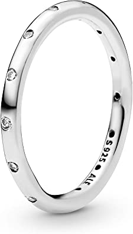

Ring Collection
Morgan Eby
Overview
I have been wearing many rings for over a year now and have learned a lot about jewelry along the way. This page covers a few of my favorite daily-wears and where to find them. All rings mentioned are in a silver color as that is my metal-tone of choice but they are avalible in other tones.
1837 Ring

Pavé Wishbone Ring

Simple Embellished Ring
Beaded Ring
Specifc Ring Data
| Ring | Brand | Price |
|---|---|---|
| 1837 Ring | Tiffany & Co | $200 |
| Pavé Hearts Ring | Pandora | $80 |
| Pavé Wishbone Ring | Pandora | $45 |
| Simple Embellished Ring | Pandora | $55 |
| Beaded Ring | Pandora | $35 |
Sources
- 1837 Ring: https://www.tiffany.com/jewelry/rings/tiffany-1837-ring-GRP01703/
- Pavé Hearts Ring: https://us.pandora.net/en/jewelry/rings/sparkle-hearts-ring/190963CZ.html? cgid=rings#start=6&cgid=rings&productscount=140
- Pavé Wishbone Ring: https://us.pandora.net/en/jewelry/rings/sparkling-wishbone-ring/196316CZ.html? cgid=rings#prefn1=size&prefv1=4.5%7C5&backs z=36&start=2&cgid=rings&productscount=87
- Simple Embellished Ring: https://us.pandora.net/en/jewelry/rings/simple-sparkling-band-ring/190945CZ.html? cgid=rings#prefn1=size&prefv1=4.5%7C5&backsz =36&start=28&cgid=rings&productscount=87
- Beaded Ring: https://us.pandora.net/en/jewelry/rings/beaded-ring/190615.html? cgid=rings#prefn1=size&prefv1=4.5%7C5&backsz= 36&start=32&cgid=rings&productscount=87